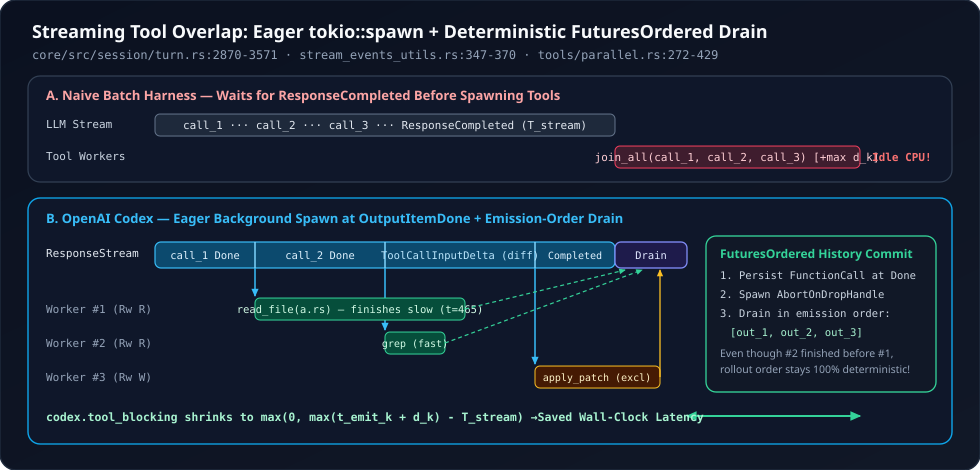

3. Streaming Tool Overlap: Dispatching FuturesOrdered Tool Calls While Tokens Still Stream
When a frontier coding model explores a repository, it routinely emits three to six parallel tool calls in a single response—reading four files and grepping two symbols—followed by several hundred tokens of JSON arguments or commentary. Naive agent harnesses buffer every item until response.completed arrives before spawning the first subprocess. Inside codex-rs/core/src/session/turn.rs, stream_events_utils.rs, and tools/parallel.rs, OpenAI Codex eliminates that end-of-stream barrier: each tool call spawns onto Tokio the exact millisecond its individual OutputItemDone frame arrives, executes concurrently behind remaining token generation, and drains through FuturesOrdered in deterministic emission order so KV-cache prefixes never permute.
1. Breaking the End-of-Stream Barrier: The Latency Equation
Suppose a single sampling step streams for wall-clock duration $T_{\text{stream}}$ and emits $K$ tool calls $c_1, c_2, \dots, c_K$. Let $t_k^{\text{emit}} \in (0, T_{\text{stream}}]$ be the stream timestamp at which ResponseEvent::OutputItemDone closes tool call $c_k$, and let $d_k$ be its execution duration once admitted through the parallel gate.
Look closely at $T_{\text{tool\_blocking}}$—measured directly by Codex’s codex.tool_blocking tracing span (turn.rs:3564-3570). Whenever fast local operations such as rg searches or file reads ($d_k \approx 15\text{–}40\text{ ms}$) finish while the model is still streaming arguments for $c_K$ ($t_k^{\text{emit}} + d_k \le T_{\text{stream}}$), post-stream tool latency collapses to zero.

turn.rs:2870-3571), each OutputItemDone persists the call item, spawns a background worker immediately via AbortOnDropHandle::new(tokio::spawn(...)), and pushes its completion future into FuturesOrdered. Fast tools finish while later tokens are still arriving over the socket.2. The Subtle Rust Trap: Why Pushing into FuturesOrdered Alone Would Stall
In Rust, async blocks are lazy: pushing a standard unpolled future into in_flight: FuturesOrdered<InFlightFuture<'static>> (turn.rs:2870) and waiting until line 3570 (after the while stream.next().await loop exits!) to call drain_in_flight(&mut in_flight, ...).await would accomplish zero overlap—none of the futures would even be polled once during streaming!
Codex avoids polling in_flight inside the stream select! loop—which would complicate borrows and interleave partial history writes—by making ToolCallRuntime::handle_tool_call eagerly spawn its Tokio task at call construction time before returning its outer join future (stream_events_utils.rs:350-366 and tools/parallel.rs:272-369):
// codex-rs/core/src/stream_events_utils.rs (lines 347-370)
record_completed_response_item(ctx.sess.as_ref(), ctx.step_context.as_ref(), &item).await;
let cancellation_token = ctx.cancellation_token.child_token();
let runtime = ctx.tool_runtime.clone();
// handle_tool_call dispatches immediately, not when its future is polled.
// Defer for post-model hooks or to cancel buffered calls during mailbox drains.
let tool_future: InFlightFuture<'static> = if ctx.defer_tool_dispatch {
Box::pin(async move {
if cancellation_token.is_cancelled() {
// The call is already in history; resume needs its output even if we never dispatch.
let output = ToolCallRuntime::aborted_response(&call, /*elapsed_secs*/ None);
return Ok(output.into_response());
}
runtime.handle_tool_call(call, cancellation_token).await
})
} else {
Box::pin(runtime.handle_tool_call(call, cancellation_token))
};
output.needs_follow_up = true;
output.tool_future = Some(tool_future);Inside ToolCallRuntime::handle_tool_call_with_source (tools/parallel.rs:272-369), calling the function synchronously executes AbortOnDropHandle::new(tokio::spawn(async move { ... })) on the Tokio runtime before returning the outer completion wrapper future:
// codex-rs/core/src/tools/parallel.rs (lines 272-335, condensed)
let mut dispatch_handle = AbortOnDropHandle::new(tokio::spawn(
async move {
let _message_admission = message_admission?;
let (guard, admission_started) = async {
if let Some(tool_runtime) = tool_runtime
&& let Some(readiness) = tool_runtime.wait_until_ready(&session)
{
readiness.await;
}
let admission_started = Instant::now();
let guard = if supports_parallel {
Either::Left(lock.read().await) // Shared RwLock: concurrent reads/MCP/PTYs!
} else {
Either::Right(lock.write().await) // Exclusive RwLock: serializes mutations!
};
(guard, admission_started)
}
.or_cancel_tool(&invocation_cancellation_token)
.await?;
let result = router.dispatch_tool_call_with_state(
session, step_context, invocation_cancellation_token,
tracker, dispatch_call, source, Arc::clone(&dispatch_call_state),
).await;
drop(guard);
result
}
.instrument(dispatch_span.clone().or_current()),
));Why FuturesOrdered Instead of FuturesUnordered?
Because each tool already runs inside its own tokio::spawn worker task, completion order on OS threads is completely unconstrained: fast Worker #2 finishes in $8\text{ ms}$ and drops its RwLockReadGuard immediately without waiting for slow Worker #1 ($210\text{ ms}$). Yet when drain_in_flight (turn.rs:2676-2704) collects results after the stream ends, FuturesOrdered yields [out_1, out_2, out_3] in strict model-emission order:
If Codex appended tool outputs in race-condition completion order (FuturesUnordered), two identical replay runs or resumed rollouts would serialize tool outputs in different orders, non-deterministically scrambling conversation history and invalidating downstream KV-cache tests and replay traces.
3. Persist-Before-Dispatch, Deferred Hooks & Cancellation Races
Three subtle failure modes arise the moment tool calls run concurrently with an active network stream. Every single one is explicitly guarded in turn.rs and parallel.rs:
| Concurrency Hazard | Failure Without Guard | Codex Invariant & Source Location |
|---|---|---|
| Stream aborts mid-turn after tool #1 already dispatched | Tool #1 mutated disk or emitted UI events, yet its FunctionCall was never recorded in rollout history—corrupting thread state. | record_completed_response_item runs on line 347 before handle_tool_call on line 365, keeping rollout and conversation history synchronized at every instant. |
defer_tool_dispatch (sync PostModelRequest hook or mailbox drain) cancels before dispatch | FunctionCall was already persisted on line 347, so skipping execution leaves an unmatched FunctionCall in history that breaks Responses API resume! | Lines 354-364 wrap the call in a lazy async move that checks cancellation_token.is_cancelled() and synthesizes ToolCallRuntime::aborted_response(&call, None) so every persisted call gets a matching output. |
Tool finishes on worker thread at the exact microsecond user hits Esc | Both the worker thread and the outer cancellation branch emit terminal UI events, double-reporting completion + abort. | call_state.terminal_outcome_reached (AtomicBool with AcqRel swap at parallel.rs:413-428) ensures exactly one terminal outcome and notify_tool_aborted fires. |
request_user_input pauses turn while token count event fires | Clients see a misleading token-usage progress update while the turn is intentionally suspended awaiting user answers. | send_token_count_event is deferred until turn.rs:3573-3579—strictly after drain_in_flight resolves, yet before checking cancellation_token.is_cancelled() so completed response tokens are never lost on abort. |
| Sampling trace span leaks into background tool tasks | Overlapping tool spans inherit codex.sampling as parent and stretch sampling telemetry past the end of the HTTP/WS response. | turn.rs:2764-2770 explicitly comments: "Do not enter this span: overlapping tools must not retain it past sampling"—passing &sampling_span only to non-tool stream processing. |
4. Live ToolCallInputDelta Diffs & Per-Item Inline Guardian Zips
Overlapping *completed* tool items is only half the story. What about a single large apply_patch call whose patch body takes $3\text{ seconds}$ to stream? Codex streams tool-argument diffs before OutputItemDone ever arrives, and zips inline safety scores per tool item:
- Live Streaming Patch Diffs (
turn.rs:3183-3197, 3411-3428): WhenResponseEvent::OutputItemAdded(ResponseItem::CustomToolCall { id, call_id, name, .. })arrives—the very first frame of a freeform tool call—Codex callstool_runtime.create_diff_consumer(&tool_name). As raw grammar chunks stream in viaResponseEvent::ToolCallInputDelta,consumer.push_delta(&delta)incrementally parses the in-progress patch and emits live UI diff previews while the model is still writing subsequent hunks! - Per-Call Serving Assessment Handoff (
turn.rs:3012-3023, 3084-3086): When OpenAI’s serving stack emits an inline 1-tokenResponseEvent::GuardianAssessmentright before a risky tool call’sOutputItemDone, Codex stores it inpending_assessment, callspending_assessment.take()insideOutputItemDone, zips it withassessment_authorization, and clones an item-scopedStepContext::with_serving_assessmentonto a freshitem_tool_runtime. Taking the option ensures an assessment scored for tool call $c_1$ can never accidentally bleed into tool call $c_2$ later in the same stream.
// codex-rs/core/src/session/turn.rs (lines 3011-3024 & 3083-3092, condensed)
ResponseEvent::OutputItemDone(mut item) => {
let serving_assessment = pending_assessment
.take()
.zip(assessment_authorization.as_ref())
.map(|(assessment, authorization)| crate::guardian::ServingAssessment {
response_id: response_id_for_assessment.clone(),
assessment,
authorization: authorization.clone(),
});
// Attach the assessment ONLY to this item's cloned ToolCallRuntime:
let mut item_tool_runtime = tool_runtime.clone();
item_tool_runtime.step_context = item_step_context;
// ...
if let Some(tool_future) = output_result.tool_future {
in_flight.push_back(tool_future);
}
}5. Questions worth answering
in_flight: FuturesOrdered?Because every background task was spawned inside an AbortOnDropHandle (parallel.rs:272) owned by its InFlightFuture inside in_flight, returning Err(error) from try_run_sampling_request drops in_flight at scope exit—automatically calling JoinHandle::abort() on every unfinished Tokio task so zero orphan workers outlive the failed sampling request.
finishes_on_cancellation() == true in parallel.rs:372 instead of letting dispatch_handle.abort() kill their Tokio task immediately?Certain dynamic or external-protocol handlers must observe cancellation_token.cancelled() internally so they can flush clean protocol cancellation frames and publish their own terminal rollout item before exiting; hard-aborting their future mid-await would sever that cleanup handshake.